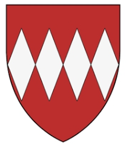

48071610 Lord William II d'Aubigny of Belvoir
Lord av Belvoir. Blev ca 56 år.

Född:
omkring 1130 Belvoir Castle, Leicestershire, England. [1]
Död:
1186 Lincolnshire, England. [1]
Barn:
Personhistoria
1130?
Födelse omkring 1130 Belvoir Castle, Leicestershire, England
[1]
1186
Död 1186 Lincolnshire, England
[1]
Källor